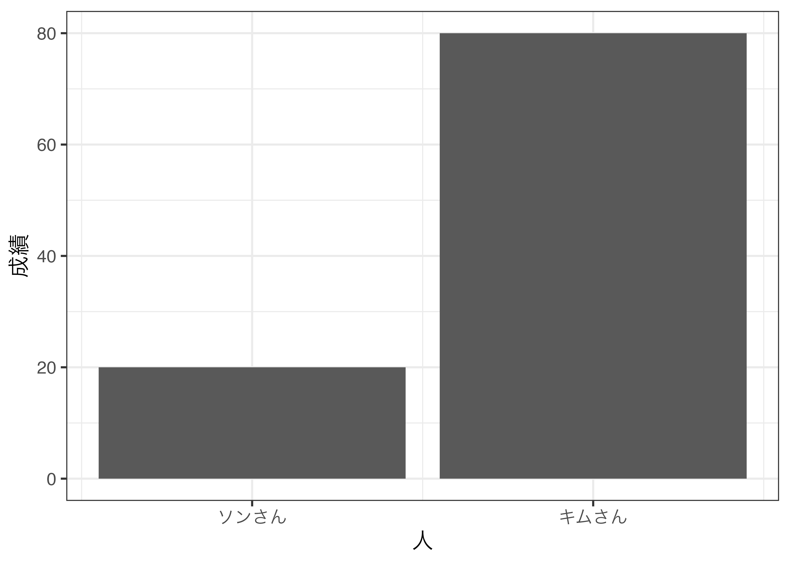
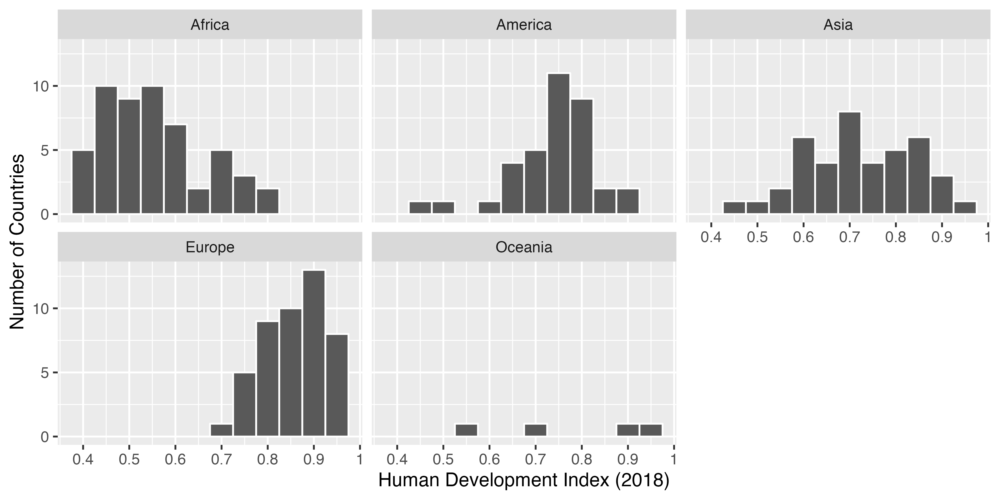

library(tidyverse)
df <- read_csv("Data/Micro09.csv")第13回講義資料
可視化 (2)
スライド
グラフ作成の手順
{ggplot2}を用いた作図は以下の手順で行われる。
- 作成したいグラフを決める
- 作成したいグラフの完成図を想像する or 描いてみる
- グラフ上の要素（点、線、面）が持つ情報を考える
- 3の情報が一つの変数（列）と対応するような整然データを作成する
- {ggplot2}で作図
- 図のカスタマイズ
- 図の保存
今回は第9回の実習用データ（Micro09.csv）を使用する。{tidyverse}パッケージを読み込んだ後、read_csv()関数でデータを読み込む。
棒グラフ
棒グラフを作成する際に必要な最低限の情報
x: 棒の横軸上の位置 (大陸)y: 棒の高さ (人間開発指数の平均値)

y: 棒の縦軸上の位置 (大陸)x: 棒の長さ (人間開発指数の平均値)

データの用意
第9回講義のデータ (Micro09.csv) を使用
- {dplyr}を使用し、大陸 (
Continent)ごとの人間開発指数 (HDI_2018)の平均値を計算し、df2という名で格納
df2 <- df %>%
group_by(Continent) %>%
summarise(HDI = mean(HDI_2018, na.rm = TRUE))
df2# A tibble: 5 × 2
Continent HDI
<chr> <dbl>
1 Africa 0.553
2 America 0.742
3 Asia 0.723
4 Europe 0.861
5 Oceania 0.782とりあえず作図してみよう
- 使用する幾何オブジェクト:
geom_bar() - マッピング要素 (幾何オブジェクト内に
aes())- 棒の横軸上の位置は大陸 (
Continent)を意味する - 棒の高さは人間開発指数の平均値 (
HDI)を意味する
- 棒の横軸上の位置は大陸 (
geom_bar()内にstat = "identity"を忘れないこと

日本語の使用 (1)
Step1: df2のContinent列を日本語にリコーディング
df2 <- df2 %>%
mutate(Continent_J = case_when(Continent == "Asia" ~ "アジア",
Continent == "Africa" ~ "アフリカ",
Continent == "America" ~ "アメリカ",
Continent == "Europe" ~ "ヨーロッパ",
TRUE ~ "オセアニア"))
df2# A tibble: 5 × 3
Continent HDI Continent_J
<chr> <dbl> <chr>
1 Africa 0.553 アフリカ
2 America 0.742 アメリカ
3 Asia 0.723 アジア
4 Europe 0.861 ヨーロッパ
5 Oceania 0.782 オセアニア Step2: 図のラベルを修正 (labs())

文字化けが生じる場合
NIIオンライン分析システムを使用する場合、文字化けは生じない
theme_*()レイヤーを追加し、base_family = "日本語フォント"を指定theme_gray(): {ggplot2}の基本テーマ- 他にも
theme_bw()、theme_minimal()など
- 他にも
- macOSの場合、
"HiraginoSans-W3"、Windowsの場合、"Yu Gothic"を指定
棒の並び替え
アルファベット順に並べ替えたい場合
Continet_J列をfactor化し、アフリカ、アメリカ、アジア、ヨーロッパ、オセアニア順とする

便利な関数: fct_inorder()
{forcats}のfct_inorder()関数（{forcats}は{tidyverse}の一部）
- factor化を行い、各要素順番を表で登場した順番とする
df2の中身
df2# A tibble: 5 × 3
Continent HDI Continent_J
<chr> <dbl> <chr>
1 Africa 0.553 アフリカ
2 America 0.742 アメリカ
3 Asia 0.723 アジア
4 Europe 0.861 ヨーロッパ
5 Oceania 0.782 オセアニア 
ケース数の棒グラフ
各政治体制に属する国家数を計算
df3 <- df %>%
drop_na(Polity_Type) %>%
mutate(Polity_Type = factor(Polity_Type,
levels = c("Autocracy", "Closed Anocracy",
"Open Anocracy", "Democracy",
"Full Democracy"))) %>%
group_by(Polity_Type) %>%
summarise(N = n())
df3# A tibble: 5 × 2
Polity_Type N
<fct> <int>
1 Autocracy 19
2 Closed Anocracy 23
3 Open Anocracy 20
4 Democracy 65
5 Full Democracy 31作図
df3 %>%
ggplot() +
geom_bar(aes(x = Polity_Type, y = N), stat = "identity")
棒が持つ情報
- 政治体制のタイプ (
x = Polity_Type) - 国家数 (
y = N)
例) さらに大陸の情報を持たせ、色分けしたい
- 大陸の列が必要
df4 <- df %>%
drop_na(Polity_Type) %>%
mutate(Polity_Type = factor(Polity_Type,
levels = c("Autocracy", "Closed Anocracy",
"Open Anocracy", "Democracy",
"Full Democracy"))) %>%
group_by(Polity_Type, Continent) %>%
summarise(N = n(),
.groups = "drop")データ
df4# A tibble: 20 × 3
Polity_Type Continent N
<fct> <chr> <int>
1 Autocracy Africa 3
2 Autocracy Asia 14
3 Autocracy Europe 2
4 Closed Anocracy Africa 14
5 Closed Anocracy America 2
6 Closed Anocracy Asia 6
7 Closed Anocracy Europe 1
8 Open Anocracy Africa 12
9 Open Anocracy America 4
10 Open Anocracy Europe 2
11 Open Anocracy Oceania 2
12 Democracy Africa 18
13 Democracy America 16
14 Democracy Asia 15
15 Democracy Europe 16
16 Full Democracy Africa 1
17 Full Democracy America 5
18 Full Democracy Asia 3
19 Full Democracy Europe 20
20 Full Democracy Oceania 2次元の追加
aes()内にfill = Continentを追加
棒の位置をずらす
geom_bar()内にposition = "dodge"を指定（aes()の外）
凡例の位置調整
theme()内にlegend.position = "bottom"を指定
- デフォルトは
"right"（"top"は上段;"none"は削除）
もう一つの方法: マッピングの交換
- 前ページの場合、「ある政治体制内の大陸の分布」を知ることに特化
- 「ある大陸内の政治体制の分布」を見るには? \(\rightarrow\)
xとfillを交換
もう一つの方法: ファセット分割
- 色分けを出来る限り抑えたい
facet_wrap(~ 分割の基準となる変数名)
値ラベルの回転
値ラベルが長すぎる場合、ラベルを回転することで重複を避ける
- 覚える必要はなく、必要に応じてググる（
theme()レイヤーはかなり複雑）
以下のように図オブジェクトに直接「+」でレイヤーを追加することもできる。

マッピング交換でも解決可能
xとyを交換しても良い
ベクトルとビットマップ
ベクトル画像を推奨するが、使用するワードソフトによってはPDFの図の埋め込みができない場合もある。
- 本講義では高解像度の
.png形式の保存方法について解説する。
ベクトル画像
.pdf、.svgなど- 推奨はPDF形式
- 拡大しても図が綺麗なまま
- 複雑な図であれば、ファイルのサイズが大きくなる

ビットマップ画像
.png、.bmp、.jpg（=.jpeg）など- 推奨はPNG形式
- 拡大すると図がカクカクする
- 高い解像度（DPI）にすると、拡大しても綺麗だが、ファイルサイズに注意
- 図が複雑でも、ファイルサイズが比較的安定

図の保存
bar_plot3を保存する例
ggsave()関数を利用- 作業フォルダー内の
FigsフォルダにFigure1.pngという名で保存- 予め
Figsフォルダーを作成しておくこと
- 予め
- 図のサイズは幅6インチ、高さ3インチ
- 保存形式はPNG形式 & 解像度は400
- 画面表示のみなら最低150、印刷目的なら最低300
- {ragg}パッケージをインストールしておく（文字化け防止）
ggsave(filename = "Figs/Figure1.png", # 保存先とファイル名
plot = bar_plot3, # 保存する図のオブジェクト名
width = 6, # 図の幅 (インチ)
height = 3, # 図の高さ (インチ)
dpi = 400, # 解像度
device = ragg::agg_png) # 文字化け防止変数の分布を確認する方法
変数が一つの場合
- 変数が離散変数の場合: 棒グラフ
- 性別、国、都道府県など、数値が意味を持たないか変数
- 順位など取りうる値が有限
- 変数が連続変数の場合: ヒストグラム、箱ひげ図
- 気温、成績、所得、身長、体重、人間開発指数、…
- 取りうる値が無限個
変数が2つの場合
- 連続変数と連続変数: 散布図
- 順序付き離散変数と連続変数: 折れ線グラフ
- 離散変数と離散変数: モザイク図
変数が3つ以上の場合
- 次元を追加する形で対応
ヒストグラムの棒が持つ情報
棒の横軸上の位置と高さ
- {ggplot2}の場合、ヒストグラムを出力する変数を
xにマッピングするだけで、自動的にヒストグラムを生成
ヒストグラムの作成
geom_histogram()を使用: マッピングはxのみ
df %>%
ggplot() +
geom_histogram(aes(x = HDI_2018)) # HDI_2018のヒストグラム棒の数を調整する
geom_histogram()内、aes()の外にbins引数を指定
df %>%
ggplot() +
geom_histogram(aes(x = HDI_2018), bins = 10) # 棒を10本にする
棒の幅を調整する
geom_histogram()内、aes()の外にbinwidth引数を指定
df %>%
ggplot() +
geom_histogram(aes(x = HDI_2018), binwidth = 0.05) # 棒の幅を0.05にする棒の枠線を入れる
geom_histogram()内、aes()の外にcolor引数を指定
hist_plot1 <- df %>%
ggplot() +
geom_histogram(aes(x = HDI_2018), binwidth = 0.05, color = "white") +
labs(x = "Human Development Index (2018)", y = "Number of Countries")
hist_plot1横軸のスケール調整
scale_x_continuous()を使用 (xをyに変えると縦軸修正)
breaks引数: 目盛りの位置 /labels引数: 目盛りのラベル
次元の追加（ファセット分割）
大陸ごとのHDI_2018のヒストグラム: ファセット分割を使用
次元の追加 (色分け)
position = "identity"とalpha = 0.5で可能であるが、非推奨
alpha = 1の場合、棒が不透明であるため、0.5程度に調整